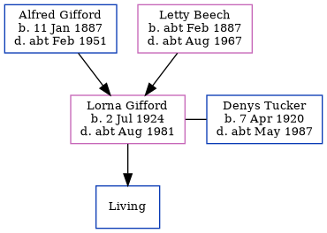

Lorna Winifred Tucker (née Gifford) 1924 - c1981
[ Home ] | [ Calendar ] | [ Surnames Index ] | [ Errors ] | [ Family History ]The child of Alfred Gifford (a painter) and Letty Beech, Lorna Gifford, the second cousin once-removed on the mother's side of Nigel Horne, was born in Andover, Hampshire, England on 2 Jul 19241,2 and. She married Denys Tucker (a salesman to build clerk with whom she had 1 surviving child, ) in Brentford, London, England around Feb 19453.
She died c. Aug 1981 in Hounslow, London, England2.
Parents
- Alfred Daniel was born on 11 Jan 1887
- Letty Louisa was born c. Feb 1887
Citations
- England & Wales births 1837-2006 - Findmypast
- England & Wales deaths 1837-2007 - Findmypast
- England & Wales Marriages 1837-2005 - Findmypast
Media
England & Wales marriages 1837-2005 - BMD/M/1945/1/AZ/000424/041
England & Wales births 1837-2006 - BMD/B/1924/3/AZ/000498/058
England & Wales deaths 1837-2007 - BMD/D/1981/3/AZ/001028/063
Family Tree
Map
Generated by ged2site. Last updated on Jul 3, 2024
Known Issues
1939 UK register information missing